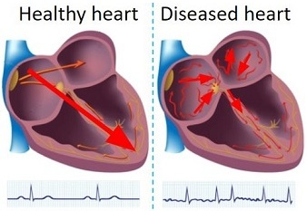
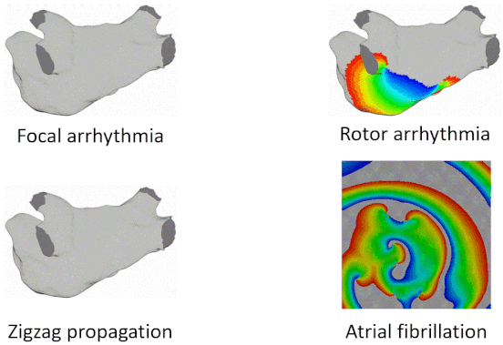
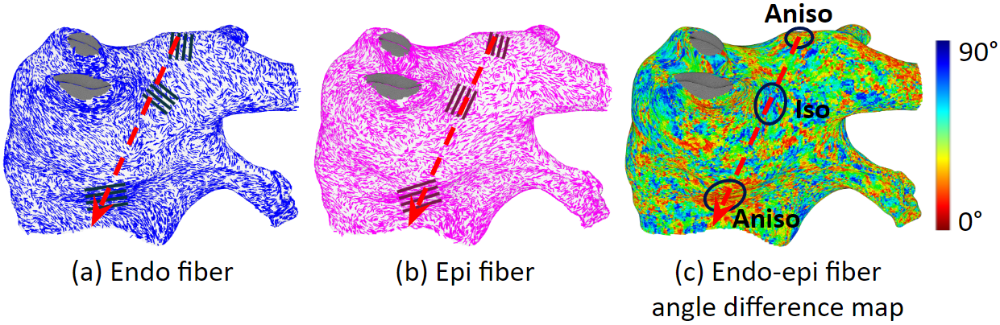
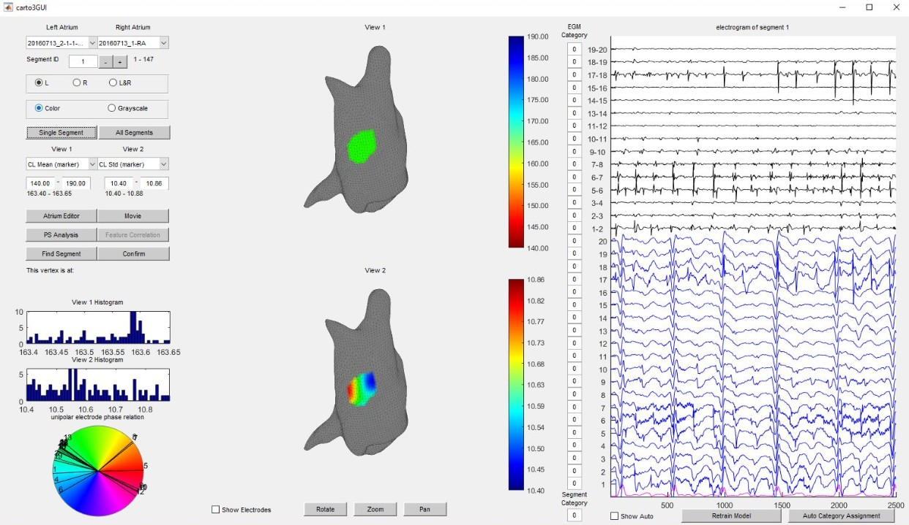
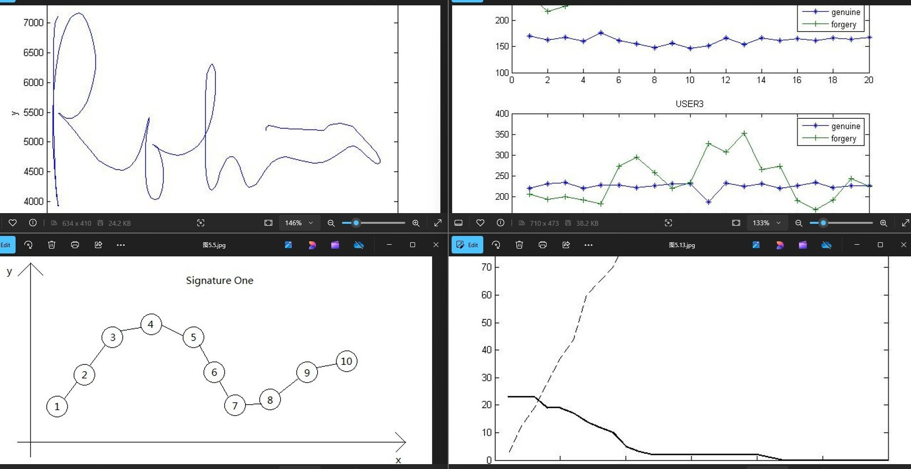
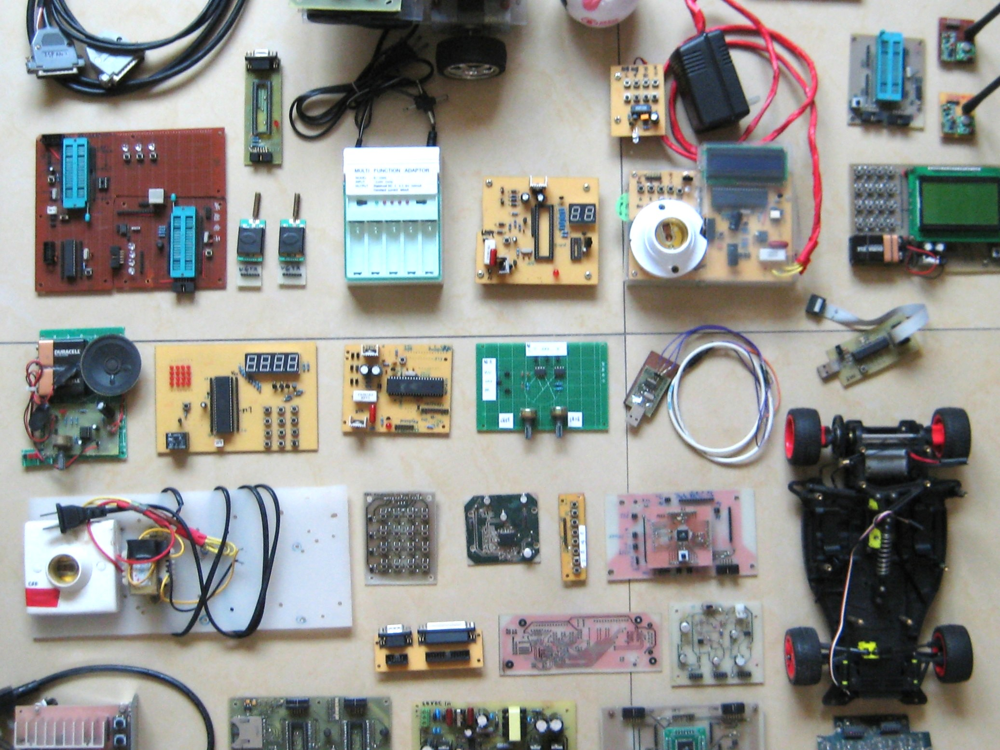

Atrial Fibrillation Ablation Challenges

Patient-specific Digital Heart for Arrhythmia Ablation

Myocardial Fiber Effects on Arrhythmia Patterns

Clinical Data Processing and Arrhythmia Source Detection

Atrial Fibrillation Statistical Activation Mapping

Handwritten Signature Verification

Robotics and Electronics
